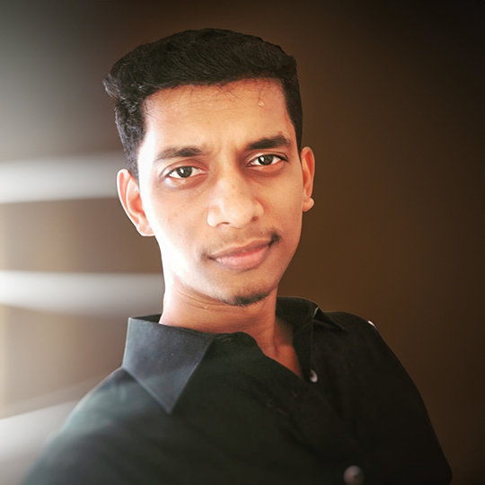
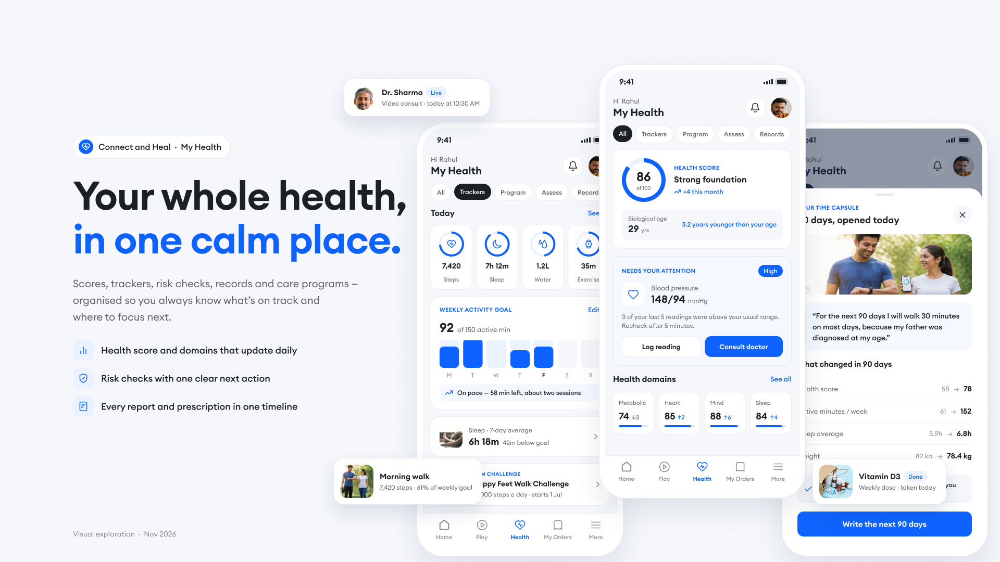
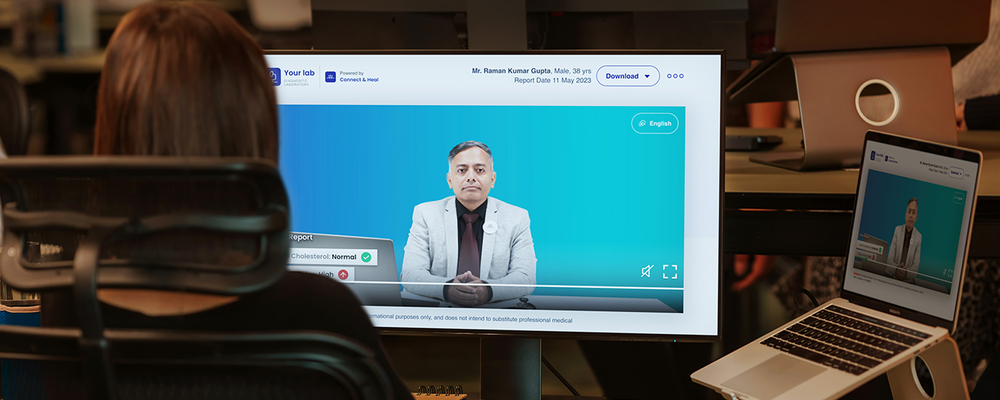
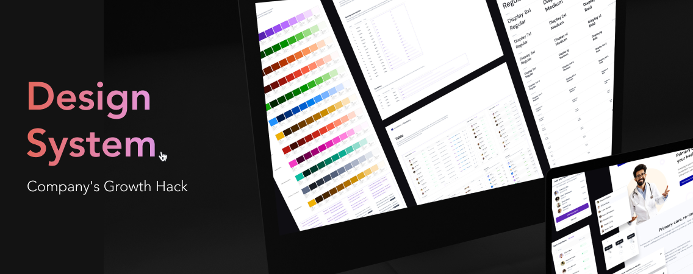
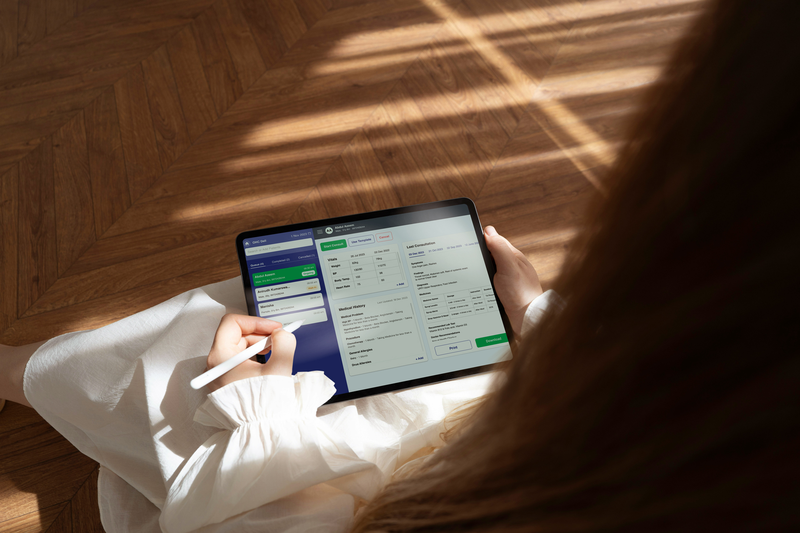
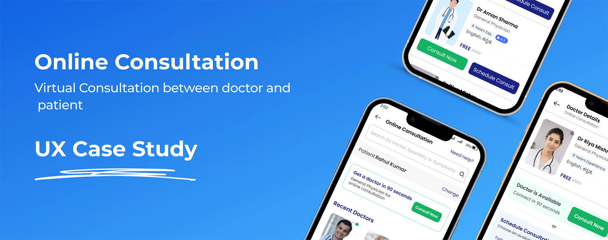
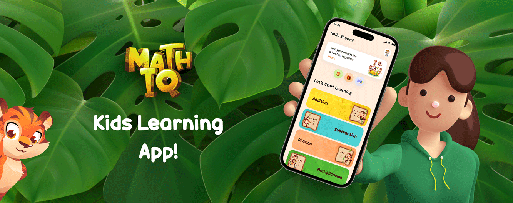

I lead design for complex products — from fuzzy problem to shipped experience.
I’m Arun Kumar. For 9 years I’ve helped startup teams turn ambiguous, high-stakes problems into clear product models, design systems and interfaces — and with 3+ years of frontend experience, I make sure they survive the trip into code.

Flagship projects, led end to end.
Each case study shows the decisions behind the screens: how I framed the problem, modelled the product, handled clinical and operational risk, and shipped with engineering.

Care Management Program
Designing a safe path from programme discovery to active care.
- ChallengeBalance member choice, conversion and clinical safety across a branching journey.
- LedProduct model, two-track care design, safety gates, onboarding and visual design.

My Health Hub
One calm place for score, trackers, risk checks, records and care.
- ChallengeUnify five data-heavy areas without overwhelming members or overstating clinical meaning.
- LedInformation architecture, prioritisation model, empty states and visual language.

Lab Test Booking
Booking lab tests for the whole family, in one cart.
- ChallengeCombine benefits, prescriptions, people and collection modes without confusing price or place.
- LedJourney architecture, booking rules, two-lab and edge states across 5 flows and 70+ screens.

Lab Report Pooling & QC
Reducing manual lab-report QC through intelligent pooling and automation.
- ChallengeAutomate confident matches while keeping ambiguous, high-risk decisions controllable.
- LedAutomation policy, assignment and QC model, exception states and console design.

Smart Health Report
From lab values to safe, actionable health interpretation.
- ChallengeExplain clinical meaning without diagnosing, alarming or falsely reassuring.
- LedMember experience, interaction model and the language of results.
More work

Design System for Healthcare
Scaling healthcare design with a shared system and three designers.

Electronic Medical Record
−35–45% doctor time on the tool · +27% consultations in a quarter.

Online Consultation
5–9% fewer cancellations · +11–14% assisted bookings.

MathIQ Learning App
Making maths practice engaging for children.
Clarity first. Screens second.
My most valuable work usually happens before the first pixel — giving the team a shared model of the product so design, engineering and the business can make faster, safer decisions.
Frame
Align stakeholders on the real problem, the users at risk and what success means.
e.g. agents were QC-ing documents; the business needed completed ordersModel
Define the nouns, states and rules so the product holds together as it grows.
e.g. separating programme, plan, track and eligibilitySystemise
Turn decisions into reusable patterns, components and governance.
e.g. a shared healthcare design system across teamsShip
Prototype, validate and pair with engineering until the intent survives into code.
e.g. design-to-code with Figma MCP and frontend skillsWhat teams bring me in for.
I’ve worked with early- and mid-stage startups across healthcare, finance and SaaS — connecting customer needs, business priorities and technical reality.
Product strategy
Problem framing, prioritisation and turning goals into a coherent experience direction.
End-to-end design
Research, journeys, IA, interaction design, prototyping and polished UI.
Design systems
Foundations, components, patterns and governance that help teams ship faster.
Complex surfaces
Clinical flows, operations consoles and information-dense dashboards.
Design-to-code
Frontend fluency to design feasible systems and close the gap with engineering.
Team enablement
Shared ways of working, design critique and higher quality bars across teams.
Faster learning, not automation for its own sake.
I use AI as a collaborative layer — exploring directions, refining content, prototyping interfaces and connecting Figma to code — so more time goes into high-value design judgment.
Have a complex product that needs clarity?
I’m always happy to talk about design leadership, healthcare products and design systems.